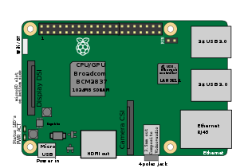

Tech Used: Computers & Microcontrollers

Raspberry Pi 3 Model B
This is the brain of the dock's functionality. It will be used for the following tasks:
- Running python scripts for calculating the 2-axis rotation needed to point the solar panels at the sun.
- Library being used is PySolar, which finds the angles needed using calculations and won't require the internet.
- Communicating with any microcontrollers that are being used in the charging dock.

Arduino Uno
Up to 4 Arduino Unos may be used in this procedure:
- 2 for rotating both axes the solar panel.
- Another for controlling the flow of current from the solar panels to the battery
- Another for each charging port, which at the moment is one.